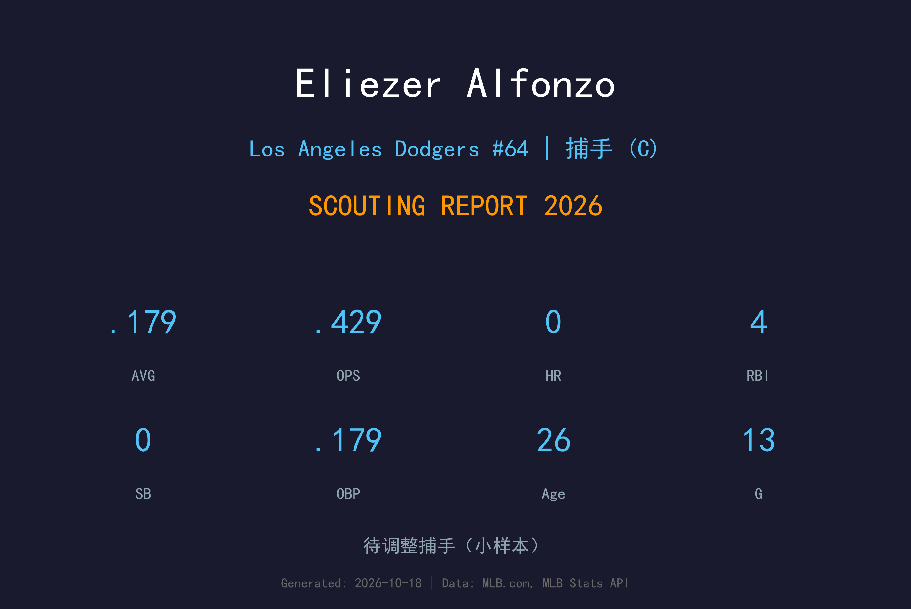
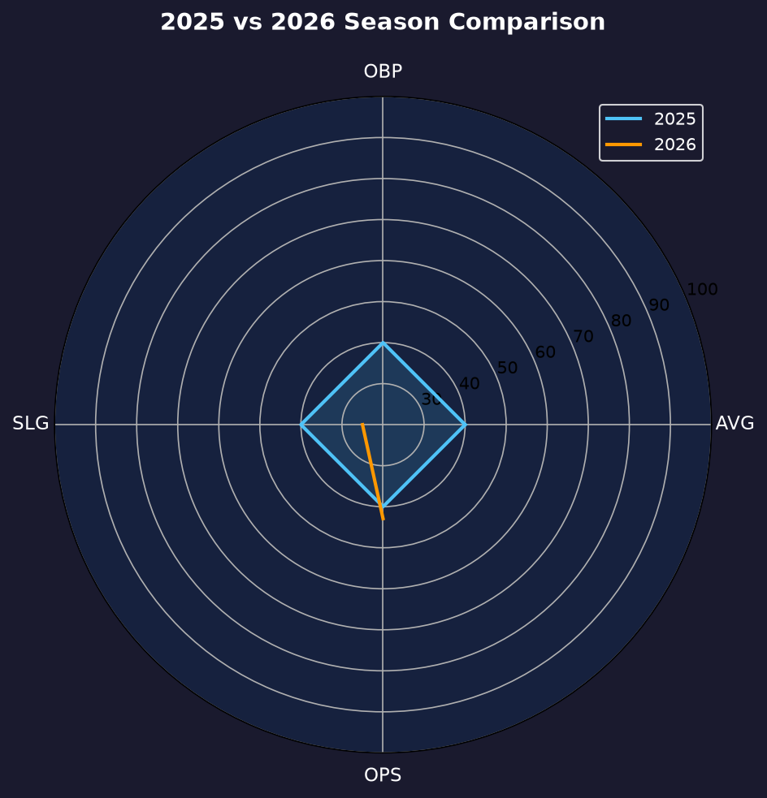
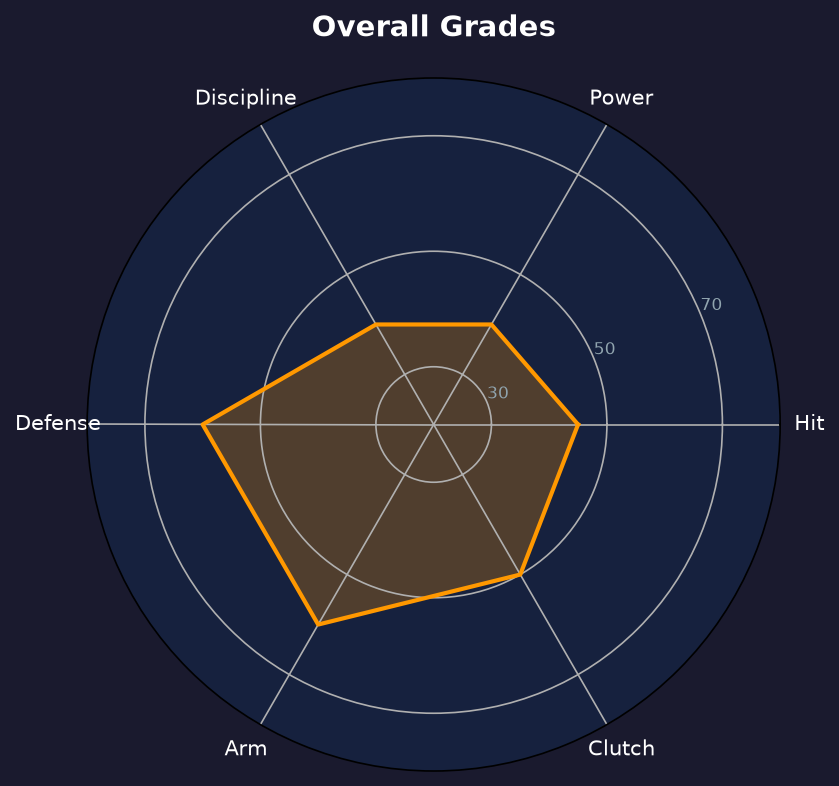

Los Angeles Dodgers | 捕手 | 右投 / 左右开弓 | 星二代接棒

Eliezer Alfonzo 是前大联盟捕手 Eliezer Alfonzo 之子——老 Alfonzo 2006-2011 年效力于巨人、教士、水手与洛矶。2026 年 7 月 5 日，儿子在道奇完成大联盟首秀，相隔约十五年，Alfonzo 这个姓氏重回大联盟本垒板后方。
2026 年他在 Will Smith 伤缺期间被紧急上调，13 场出赛缴出 .179/.179/.250、4 分打点。28 个打席的小样本下，5 支安打中有 2 支二垒打，BABIP 仅 .200——运气成分占相当比例，真实实力尚未展开。
26 岁的大联盟菜鸟、40 人名单在身的捕手，他的价值暂时不在打击，而在左右开弓的配球弹性与家族的捕手基因。未来一年他需要在 3A 用打击证明自己值得第二次机会。
在道奇完成 MLB 首秀，成为 Alfonzo 家族第二位大联盟球员。其父亲 2006-2011 年效力巨人、教士、水手与洛矶，以大联盟替补捕手身份生存六年。
2016 年签约底特律老虎体系，从多米尼加夏季联盟起步，历经 1A、2A（Erie）、3A（Toledo）。2025 年在 2A/3A 出赛 64 场，冬季于委内瑞拉联盟缴出 .298/.372/.415。
7 月 4 日被道奇从 3A 上调，顶替伤缺的 Will Smith，出赛 13 场贡献 4 分打点。赛季末留在 40 人名单。
小样本警告：13 场 / 28 打席，BABIP .200 远低于联盟平均，数据参考价值有限。

| 赛季 | 球队层级 | G | AVG | OBP | SLG | OPS | 2B | RBI |
|---|---|---|---|---|---|---|---|---|
| 2025 | 老虎 2A Erie（57场） | 57 | .247 | — | — | — | — | 30（得点圈） |
| 2026 | 道奇（MLB首秀） | 13 | .179 | .179 | .250 | .429 | 2 | 4 |
2025 年为老虎 2A Erie 成绩（56-for-227；对右投 .289、对左投 .131），另有 3A Toledo 7 场、委内瑞拉冬季联盟 .298/.372/.415 作为背景参考。2026 为 MLB 菜鸟赛季，样本极小；3 三振 0 保送显示其现阶段以出手为主、选球尚未展开。
父亲老 Eliezer Alfonzo 以强壮手臂和防守韧性在大联盟生存六年。小 Alfonzo 继承了本垒板后的直觉：道奇捕手教练组对其接球与传球的基本功评价正面，这是他留在 40 人名单的最大理由。
.179/.179/.250 的 slash line 意味着他 28 个打席没有获得一次保送，上垒完全依赖安打。左右开弓本是替补捕手的加分项，但若两边都挥不出打击率，优势便无从谈起。唯一亮点是 4 分打点——在有限的得分机会里他把球打进了场地。
BABIP .200 说明部分低潮来自运气；但 5 支安打、0 保送的结构问题是真的。2025 年 2A 的 .243/.309/.340 更接近他的真实水平：一名能守备、打击略低于平均的替补捕手。2027 年他需要在 3A 把 OBP 打回 .320 以上，才有机会成为 Smith 身后稳定的二号选择。

守备为骨、进攻待验的替补捕手苗子
B- 级 / 捕手深度
Eliezer Alfonzo 的2027赛季目标是在 3A Oklahoma City 站稳，把打击率打回 .250、上垒率 .320 以上，等待 Will Smith 轮休或伤缺时的召唤。他的天花板是合格的二号捕手，地板则是名单边缘的 depth piece。
2026：7/4 上调、7/5 首秀，13 场 .179/.179/.250、4 分打点；赛季末留在 40 人名单
2027：目标 3A 完整赛季，OPS 回到 .700 区间
2028+：若守备持续获认可，可竞争道奇二号捕手；否则将游走于名单边缘
Eliezer Vicente Alfonzo 1999 年 9 月 23 日出生于委内瑞拉的巴塞罗那（Barcelona, Venezuela）——与西班牙名城同名，却是委内瑞拉东北部的一座工业城市。他的父亲 Eliezer Jesus Alfonzo 是 MLB 2006-2011 年间的替补捕手，效力过旧金山巨人、圣迭戈教士、西雅图水手与科罗拉多洛矶，以强壮的传球手臂著称。
小 Alfonzo 2016 年与底特律老虎签约，从多米尼加夏季联盟开启职业生涯。他的爬升不算快：2023 年在 1A West Michigan 打出 13 场连续安打，季末升上 2A Erie；2025 年在 2A/3A 之间度过了完整一年，并连续两年获得老虎春训非名单邀请。2025 年冬季，他在家乡委内瑞拉联盟缴出 .298/.372/.415 的成绩单，这引起了道奇球探的注意。
2026 年，道奇给了他一份小联盟合约。7 月 4 日 Will Smith 伤缺，他从 3A 被紧急上调，次日完成大联盟首秀。十五年前父亲蹲过的本垒板，如今轮到儿子——Alfonzo 家族的棒球血脉，在洛杉矶完成了接力。场外的他话不多，队友形容他"带着老派捕手的沉稳"。